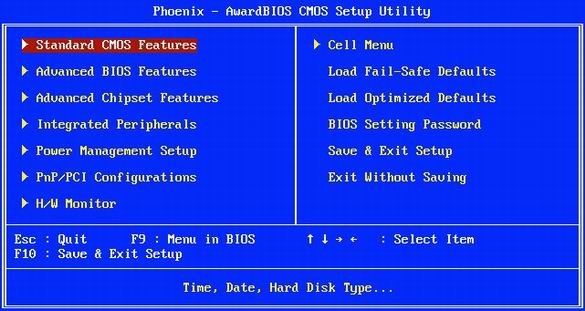
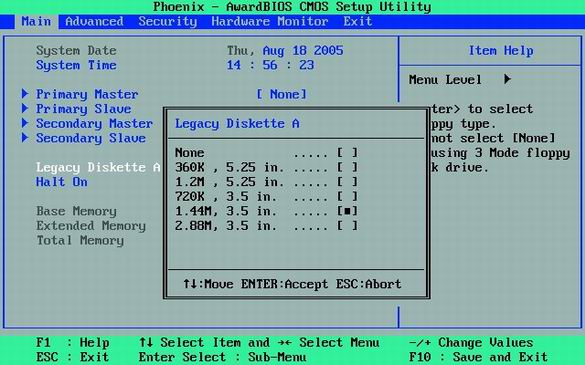
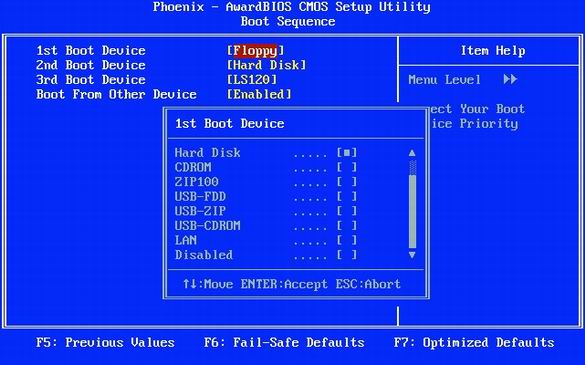
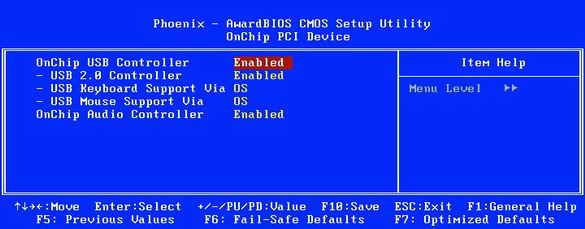
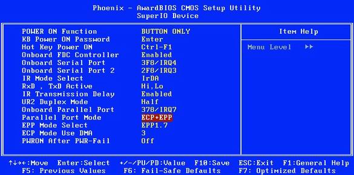
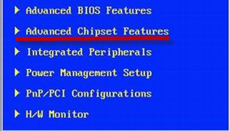
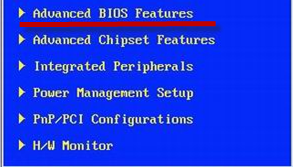
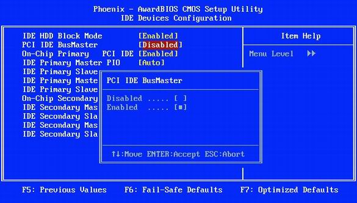

ЛАБОРАТОРНАЯ РАБОТА № 13
НАЗНАЧЕНИЕ И КОНФИГУРАЦИЯ BIOS
Цель работы — изучить основные настройки конфигурации BIOS. Изучить основные разделы BIOS. Определить основы оптимизации BIOS. Настроить BIOS для оптимальной работы с ПК.
Приборы и материалы: персональный компьютер типа IBM PC/AT на основе центрального процессора Intel Pentium.
Теоретическая часть
1. Версии BIOS
Хотя задачи, выполняемые BIOS, одинаковы вне зависимости от конкретной реализации BIOS, различия все же имеются. Самое заметное для пользователя — интерфейс подпрограммы BIOS Setup. Так что есть смысл остановиться на производителях и версиях BIOS, отличиях в их интерфейсе, способе управления.
1.1. Производители BIOS
В настоящее время среди разработчиков BIOS для персональных компьютеров наиболее известны три фирмы.
Во-первых, это American Megatrends, Inc. Во времена 386-х процессоров BIOS разработки этой фирмы (AMI BIOS) стояли практически на всех компьютерах. Затем постепенно их вытеснили BIOS производства Award Software, Inc. (об этой компании чуть позже). Но в последнее время ситуация изменилась и AMI BIOS снова завоевал заслуженную популярность у производителей. Его используют такие известные производители материнских плат, как ASUS, Gigabyte, MSI, ESC и другие.
Второй по алфавиту идет фирма Intel. Некоторое время назад на своих материнских платах она использовала модифицированный BIOS производства American Megatrends, Inc. — он так и назывался Intel/AMI BIOS. Сейчас, после существенной переработки, упоминание о American Megatrends, Inc. исчезло и на современных материнских платах используется уже собственный Intel BIOS.
Здесь надо заметить, что в отличие от других компаний-разработчиков BIOS, Intel использует свои наработки только на собственных материнских платах.
И, наконец, третий весьма влиятельной фирмой этого рынка — Phoenix Technologies. До поглощения Award Software, Inc. (во времена процессоров Pentium — Pentium II) Phoenix BIOS не был особо популярен у производителей материнских плат, а вот Award BIOS самостоятельной тогда Award Software, Inc. использовался на подавляющем большинстве компьютеров.
Так что приобретение Award Software, Inc. позволило Phoenix Technologies существенно расширить занимаемую долю рынка, и сейчас BIOS Phoenix Technologies (торговые марки — Award BIOS, Phoenix Award BIOS, Phoenix Award Workstation BIOS) используются практически всеми производителями материнских плат. Он даже более популярен (особенно у производителей материнских плат второго эшелона), чем AMI BIOS.
1.2. Актуальные версии BIOS
Во времена первых и вторых Pentium на компьютерах чаще всего использовалась BIOS фирмы Award Software, Inc. версии 4.51PG (Award BIOS 4.51PG). В качестве альтернативы, могла быть установлена AMI BIOS версий 1.21 или 1.24 от American Megatrends, Inc.
Речь здесь идет не о версиях (ревизиях) прошивок BIOS для каждой конкретной материнской платы (компьютера), а о «глобальных» версиях BIOS от разработчиков. Упрощенно можно сказать, что речь идет о версиях интерфейса программы BIOS Setup.
К появлению Pentium III как раз произошла покупка Award Software, Inc. фирмой Phoenix Technologies. В результате слияния появились сразу несколько разновидностей 6-й версии Award BIOS. Так, в версии 6.0 (без дополнительных буквенных индексов) используется способ навигации, унаследованный от BIOS фирмы Phoenix, а в 6.0PG — способ, во многом аналогичный использовавшемуся в версии 4.51PG. Вы можете встретить на материнской плате и Award BIOS 6.0PG, и Phoenix Award BIOS 6.0PG, и Phoenix Award Workstation BIOS 6.0PG, но, по сути, это одно и то же — Phoenix Award BIOS 6.0PG (это название мы и будем использовать в дальнейшем, как самое распространенное). И интерфейс, и набор опций практически идентичны, а определенные различия обусловлены скорее фирменными отличиями производителей материнских плат, да особенностями используемых чипсетов и поддерживаемых процессоров.
Несколько позже (в момент появления Pentium 4 Socket 423) определенной модернизации подвергся и AMI BIOS от American Megatrends, Inc. — появилась версия 1.45, практически полностью копирующая предыдущую. Введенные в ней изменения, в основном, косметические и касаются интерфейса. Затем (ориентировочно в момент анонса Pentium 4 Socket 478), произошла еще одна небольшая модернизация до версии 1.50. Ее главное достоинство — гораздо большее количество доступных для изменения опций. А вот дальнейшие обновления продукции American Megatrends, Inc. носят более существенный характер.
В первую очередь в версии AMI BIOS 2.01 был кардинальным образом переработан интерфейс — он стал гораздо удобнее. В чем-то он напоминает таковой у Phoenix Award BIOS 6.0PG. Дальнейшее развитие эта идея получила в AMI BIOS 3.31A. Ну а для современных компьютеров American Megatrends, Inc. предлагает AMI BIOS 2.5x и AMI BIOS 2.6x (2.51, 2.53, 2.55, 2.58, 2.61, 2.62, 2.63 и т.п.).
Если сравнивать современные версии Phoenix Award BIOS и AMI BIOS, то последние, не уступая Phoenix Award BIOS по количеству и богатству настроек, несколько удобнее в плане интерфейса. К тому же, начиная с AMI BIOS 1.45, American Megatrends, Inc. предлагает такую возможность, как выбор устройства, с которого будет осуществлена загрузка, без захода в BIOS Setup. Вам достаточно нажать определенную клавишу (<F11> или <F8>, в зависимости от производителя материнской платы или компьютера) на клавиатуре в момент прохождения процедуры POST, чтобы на экране появилось дополнительное меню, позволяющее выбрать нужное устройство.
Впрочем, эта возможность присутствует у некоторых модификаций Phoenix Award BIOS и Intel BIOS (только нажимать надо <F10> или <F12>).
Здесь надо сделать одно важное замечание, касающееся такого производителя, как ASUS. Эта компания уже достаточно давно модернизирует код BIOS, внося в него множество изменений. В результате интерфейс утилиты BIOS Setup на материнских платах ASUS зачастую существенно отличается от интерфейса аутентичных вариантов BIOS. Так, внешний вид утилиты BIOS Setup AMI BIOS версий 2.5x/2.6x, используемых сейчас на большинстве продукции ASUS, имеет мало общего с интерфейсом аналогичной версии AMI BIOS, применяемой, скажем, Gigabyte или MSI. Скорее, он характерен для Phoenix Award BIOS 6.0. Впрочем, программный код Phoenix-Award тоже подвергся существенной модернизации. В первоначальном варианте — Award BIOS 6.0 — изменено расположение опций и добавлены новые настройки. Дальнейшее развитие ветви на материнских платах ASUS (теперь она так и называется — Phoenix Award BIOS 6.0) еще больше сблизило интерфейс утилит BIOS Setup двух разработчиков BIOS. Исходя из этого, есть смысл рассматривать модернизированные ASUS версии AMI BIOS 2.5x/2.6x, Award BIOS 6.0 и Phoenix Award BIOS 6.0 как вполне самостоятельные продукты.
И, наконец, продукция фирмы Intel, используемая ей на материнских платах собственного производства. Как уже говорилось, некоторое время назад это был основательно модернизированный AMI BIOS, получивший в результате имя Intel/AMI BIOS 6.0. Современные платы уже базируются на собственной разработке — Intel BIOS 6.0PG, отличающейся интерфейсом и, самое главное, наконец-то позволяющей осуществлять полноценное управление частотами шин и таймингами (задержками) памяти.
Как правило, с выходом новых версий BIOS производители материнских плат перестают использовать старые версии. Но бывают и исключения. Так вполне реально встретить, например, AMI BIOS 1.21 на материнской плате для Pentium 4.
Несколько замечании:
Прежде чем переходить к описанию конкретных версий BIOS надо сделать несколько важных замечаний. Первое касается интерфейса BIOS Setup. По возможности, приводятся референсные варианты этого интерфейса без модификаций, осуществляемых производителями материнских плат. Это позволяет не сосредотачиваться на технологиях, продвигаемых теми или иными брендами для повышения привлекательности своей продукции в глазах покупателя. Как правило, эти технологии ориентированы на энтузиастов и оверклокеров и являются в большинстве случаев обычными маркетинговыми инициативами. Так, к примеру, ASUS на некоторых своих материнских платах объединяет все опции, относящиеся к разгону, в отдельный пункт главного меню Extreme Tweaker, Gigabyte переименовала стандартный пункт Frequency/Voltage Control в MB Intelligent Tweaker (M.I.T.), MSI — в Cell Menu и т.д. Да, при этом для пользователя остаются доступными опции, позволяющие тонко настроить порядок функционирования чипсета, он может указать все тайминги (задержки) при работе с памятью, выставить повышенные напряжения для ядра процессора, модулей памяти и графической карты, но хорошо ли это или плохо — спорный вопрос. Ведь основу стабильности работы материнской платы (в том числе и на повышенных относительно штатных частотах) в первую очередь составляют грамотный дизайн самой материнской платы и ее безупречная разводка. А если этого нет, то не спасут никакие меню в BIOS.
Второе замечание также касается интерфейса, но оно уже несколько другого рода. Производители материнских плат иногда расширяют стандартные настройки, предлагаемые в тех или иных пунктах меню, добавляя туда новые, позволяющие более тонко настроить те или иные параметры. Могут изменяться и названия опций. Также, бывает, часть опций переносится из одного пункта меню в другой, сходный по смыслу.
И, наконец, еще одно замечание по поводу интерфейса утилиты BIOS Setup. Прекрасно понимая, что неправильная установка значения некоторых опций способна привести к нестабильной работе компьютера и, даже, вызвать его временную неработоспособность, производители материнских плат по возможности страхуются от ошибок пользователей. Так Intel до недавнего времени вообще убирала из BIOS Setup все потенциально опасные настройки (в современных версиях BIOS от Intel они уже доступны, только предварительно вам потребуется подтвердить, что вы прекрасно понимаете, что делаете) а, скажем, Gigabyte на некоторых моделях материнских плат дает полный доступ ко всем настройкам только после нажатия определенной комбинации клавиш (<Ctrl>+<F1>) при нахождении в главном меню BIOS Setup. Плюс, подавляющее большинство производителей автоматически сбрасывают значения опций к безопасным, если предыдущая попытка загрузки (иногда две подряд) закончилась неудачей.
2.Конфигурационные настройки BIOS
2.1. Выход в BIOS
Во время загрузки, когда BIOS проверяет аппаратные компоненты системы, считает доступную память и находит жёсткие диски и другие приводы или устройства, с помощью специальной клавиши можно выйти в программу настройки BIOS Setup. Часто достаточно нажать клавишу [Del], но используются и другие варианты, например [F2]. Во время загрузки: в большинстве BIOS на нём выводится строчка вроде "F10 = Setup" ближе к нижней части монитора. Если ничего не получается, откройте руководство к материнской плате, где должна быть указана комбинация. Нажмите указанную клавишу (или комбинацию) и удерживайте секунду или две во время загрузки ПК.
Если она сработает, то BIOS посчитает объём доступной памяти, после чего появится главное меню BIOS. Если же не получилось, то перезагрузите компьютер и попытайтесь использовать другую комбинацию клавиш. Например, многие ноутбуки выходят в BIOS по нажатию клавиши [F1] или [Esc]. Иногда срабатывают клавиши [F2], [F10] или комбинация вроде [Alt F1].
2.2. Изменяем настройки BIOS

Настройка BIOS: с помощью курсора выберите нужную строку и нажмите "Enter".
Чтобы выбрать какое-либо меню в BIOS, используйте курсор и с помощью стрелок подведите его к нужному пункту. Нажав клавишу "Enter", вы перейдёте к разделу или получите окно выбора настройки (как на иллюстрации ниже). Чтобы изменять указанную настройку, следует нажимать клавиши "плюс" [+] или "минус" [-], либо другую комбинацию вроде [Page Up] и [Page down]. Из главного меню настройки BIOS вы будете попадать на различные разделы настройки, которые могут разделяться и на собственные подразделы.

Открываем подраздел. Значения многих опций можно менять с помощью клавиш "плюс" [+] и "минус" [-], в то время как другие можно выставлять с помощью выпадающего меню.
Разделы главного меню настройки BIOS.
1. В разделе "Main" или "Standard CMOS Setup" можно задать дату и время, а также параметры жёстких дисков.
2. В разделе "BIOS Features Setup" приведены различные общие настройки.
3. Раздел "Integrated Peripherals" отвечает за интерфейсы и дополнительные системные функции.
4. Раздел "Power Management Setup" позволяет настроить все опции энергопотребления и питания.
5. В разделе "PnP/PCI Configurations" можно привязывать прерывания (IRQ) к картам расширения вашего ПК. Если подобные функции отсутствуют в разделе, их можно обнаружить в подразделе "Advanced".
6. Раздел "Hardware Monitor" позволяет узнать значения системных датчиков: температуру процессора или скорость вращения вентиляторов (об/мин). Обычно показываются скорости вращения вентиляторов процессора и корпуса, но также здесь могут присутствовать параметры вентилятора блока питания или других.
7. Пункт "Load Setup Defaults" восстанавливает настройки BIOS по умолчанию и устраняет все изменения, которые вы могли внести. Данный пункт будет полезен, если ваши действия привели к каким-либо проблемам в системе.
2.3. Выходим из настройки BIOS Setup
Для завершения настройки BIOS нажмите клавишу [F10], либо выберите пункт основного меню "Save & Exit Setup". Иногда сначала требуется выбрать пункт "Exit", после чего указать вариант "Exit & Save Changes". Затем обычно предлагается выбор сохранения внесённых изменений: "Да" [Y] или "Нет" [N]. Выберите требуемый вариант, после чего компьютер будет перезапущен.
2.4. Ключевые настройки BIOS
Ниже покажем, как изменить в BIOS последовательность выбора загрузочных дисков для компьютера, включать ПК нажатием клавиши или "кликом" мыши, активировать поддержку USB 2.0, а также решить проблемы с вентиляторами или изменением аппаратной конфигурации.
Устанавливаем в BIOS приоритет загрузочных устройств

В BIOS лучше не ставить дисковод первым загрузочным устройством. Вместо дисковода укажите жёсткий диск.
Большинство ПК по умолчанию в качестве приоритетного загрузочного устройства выставляют дисковод. Эта опция на пару секунд замедляет загрузку ПК, поскольку он будет проверять наличие в дисководе загрузочной дискеты. Не нужно этого делать и потому, что существует опасность заразиться загрузочным вирусом с заражённой дискеты. Лучше выставить в качестве первого загрузочного устройства жёсткий диск.
В BIOS Setup существует возможность указать устройства, с которых возможна загрузка, а также порядок их проверки. Рассмотрим, как убрать дисковод из первого загрузочного устройства. Для этого выберите "Advanced BIOS Features, Boot Sequence", затем выберите пункт "1st Boot Device" и измените его значение с "Floppy" на "Hard Disk", как показано на иллюстрации выше. В принципе, жёсткий диск может назваться и "HDD-0". В результате компьютер будет загружаться сразу с жёсткого диска, минуя дискету. Конечно, при необходимости порядок загрузки можно всегда восстановить, вернувшись в BIOS Setup.
Но сейчас, даже если компьютер и не будет пытаться загружаться с дискеты, он всё равно будет проверять дисковод при загрузке, теряя время. Чтобы избежать проверки дисковода, выставьте опцию "Boot Up Floppy Seek" в значение "Disabled".
2.5. Ускоряем загрузку ПК при помощи BIOS
Для ускорения загрузки важно, чтобы ПК не проверял лишние устройства, а грузился сразу же с жёсткого диска. Кроме того, лучше отключить поиск новых жёстких дисков и других устройств. Если вы не часто меняете набор жёстких дисков в системе, то выставьте нулевое время поиска. Для этого в меню "Main" поставьте значение "Timeout" на "0".
2.6. Включить в BIOS поддержку USB 2.0

USB: если вы установили Windows XP вместе с Service Pack 2, то следует включить опцию "USB 2.0 Controller".
На многих материнских платах опция "USB Controllers" по умолчанию выставлена в режим USB 1.1. Связано это с тем, что Windows XP без пакетов исправлений Service Pack (и специальных патчей) не поддерживает USB 2.0. Именно поэтому поддержку USB 2.0 обычно приходится включать вручную.
Для включения USB 2.0 в BIOS Setup выставьте опцию в значение "Enabled" (как показано на иллюстрации выше) или в "V1.1+V2.0". Но помните, что для использования интерфейса USB 2.0 требуется установить, как минимум, Service Pack 1 для Windows XP.
2.7. Решить проблемы с USB-устройствами при помощи BIOS
Некоторые флэш-брелки, MP3-плееры и USB-накопители питаются от порта USB. Если питания недостаточно, то устройство работать не будет. Именно поэтому следует убедиться, что порт USB обеспечивает достаточно питания для подобных устройств.
Проверьте, есть ли в вашей BIOS опция под названием "USB 2.0 HS Reference Voltage". Если есть, то выставьте значение с "Low" или "Medium" на "High" или "Maximum".
2.8. Изменить в BIOS реакцию ПК на выключение электричества.
В разделе "Power Management" BIOS Setup можно указать, как компьютер будет реагировать на выключение электричества. Опции "AC Power Loss Restart" или "Restore on AC Power Loss" в BIOS отвечают за поведение компьютера после аварийного выключения электричества и последующего восстановления питания. Выставьте эту опцию в значение "On" или "Enabled", если хотите, чтобы компьютер автоматически загрузился. Либо "Off" или "Disabled" в противном случае.
2.9. Проверить температуру и состояния ПК через BIOS
BIOS предоставляет информацию о рабочих параметрах вашего ПК. Вы можете отследить в реальном времени состояние жизненно важных системных компонентов, включая CPU, вентиляторы, блок питания и жёсткие диски. Например, можно включить в BIOS подачу тревоги, если процессор превысит определённую температуру, или даже реализовать аварийное выключение. В результате ваша система не перегреется.
Различные пункты в разделе "Health" или "H/W Control" позволяют отслеживать изменение напряжений, а также датчиков температур. В большинстве BIOS выводятся значения для температуры процессора и корпуса, а в некоторых версиях и другие температуры, скажем, жёсткого диска или чипсета материнской платы. Кроме того, в BIOS можно узнать скорость вращения вентиляторов (в об/мин).
2.10. При помощи BIOS устранить проблемы с кулерами
Если ваш ПК не загружается, то это может быть вызвано слишком низкой скоростью вращения кулера или вообще его остановкой. Особенно часто такая ситуация встречается с high-end кулерами, чья скорость вращения зависит от температуры. Они могут вращаться очень медленно (или вообще останавливаться) при низкой температуре, в результате чего BIOS может посчитать, что вентилятор вышел из строя. В таких случаях помогает правильная настройка BIOS.
Выставьте в BIOS значение опции "CPU Fan Failure Warning" в "Disabled". Когда вы выключите эту опцию, компьютер будет загружаться, даже если вентилятор вращается с низкой скоростью. Конечно, есть ещё одна проблема: вы можете не войти в BIOS вообще, поскольку компьютер может отказаться загружаться по упомянутой выше причине (во многих BIOS эта опция выставлена по умолчанию в значение "Enabled"). В таком случае придётся на время подключить к материнской плате любой кулер, который всегда вращается на максимальной скорости. А после отключения настройки можно подключать уже high-end модель.
2.11. Обеспечение устойчивой работы системы
Современные жёсткие диски могут определять симптомы или проблемы, которые предшествуют выходу накопителя из строя, предупреждая об этом BIOS. Такая функция называется "Self Monitoring And Reporting Technology" (SMART). Включение функции "HDD SMART Capability" позволяет BIOS отсылать предупреждения программам вроде Norton System Works или широко известной бесплатной утилите SpeedFan. В результате пользователь получает информацию о состоянии накопителей. Такая возможность позволяет принять необходимые меры, как только начнут появляться первые симптомы сбоя.
Подключаем старые принтеры и сканеры (LPT)

Параллельный порт: самым быстрым режимом является "ECP + EPP".
Параллельный порт компьютера (LPT) обычно работает только в одном направлении. Эта настройка подходит практически для всех устройств, хотя скорость передачи ограничивается 100 кбит/с. Можно перевести LPT-порт в более современный режим, который даёт скорость до 1 Мбит/с.
Для этого нужно включить режим "ECP" (Extended Capability Port) или "EPP" (Enhanced Parallel Port). Можно включить оба режима сразу, выставив опцию "ECP/EPP" или "ECP + EPP".
Предупреждение: если к одному порту у вас подключено несколько устройств, то со скоростными режимами могут возникнуть проблемы. В таких ситуациях можно рекомендовать докупить карту расширения PCI, которая позволит добавить второй порт LPT. Либо купить переходник USB-LPT. Или, конечно, перейти на более современный сканер или принтер.
Тонкая настройка BIOS
2.12. Включить в BIOS вывод результатов теста POST во время загрузки
Во время загрузки ПК многие компьютеры выводят разноцветные логотипы производителей вместо строчек POST (Power-on Self-Test). Но, кажется, намного полезнее будет видеть, какой элемент компьютера тестируется, и с какими результатами.
В разделе "Advanced BIOS Features" найдите пункт "Full Screen LOGO Display" и выставите его в "Disabled". После этого вы сможете наблюдать результаты всех тестов ПК во время загрузки.
2.13. Настроить BIOS чтобы ПК загружался ещё быстрее
При помощи BIOS можно ещё более сократить время загрузки ПК, уменьшив время первого тестирования. Конечно, рекомендовано осуществлять это только если все компоненты ПК работают стабильно. Скажем, можно включить в BIOS однократную проверку доступной памяти вместо трёхкратной. Для этого перейдите в раздел "Advanced" или "Advanced BIOS Features", найдите опцию "Quick Power On Self Test" или "Quick Boot" и выставьте её в значение "Enabled".
Предупреждение: если появятся какие-либо проблемы с "железом", рекомендовано вернуться в BIOS и выключить быстрый тест, выставив значение "Disabled". При этом BIOS с большей вероятностью найдёт ошибку.
2.14. Включить в BIOS другую видеокарту
Если в вашем компьютере есть несколько интерфейсов, в которые может быть установлена графическая карта (встроенная графика, AGP, PCI Express, PCI), то BIOS при загрузке будет пытаться определить, в каком из них находится рабочая карта. Но это необязательно, ведь вся необходимая информация вам известна.
Выберите в BIOS Setup опцию под названием "Init Display First", которая также может назваться "Primary VGA BIOS" или "VGA Boot From" в зависимости от версии BIOS. Укажите значение "AGP", если вы используете графическую карту AGP. В новых системах с PCI Express эта опция обычно называется "PEG Port/Graphic Adapter Priority". В таком случае выставьте её в значение "PEG", если используете карту PCI Express.
2.15. Отключить лишние функции видеокарт в BIOS

BIOS Cacheable: эта опция улучшит производительность только в MS-DOS.
Опции "Video RAM Cacheable" и "Video BIOS Cacheable" улучшают производительность графики на старых машинах под DOS. Но для Windows они бесполезны. Включать их незачем.
Выставьте в BIOS обе опции "Video RAM Cacheable" и "Video BIOS Cacheable" в значение "Disabled". Заодно отключите опцию "VGA Palette Snoop", если она есть. Наконец, можно отключить и опцию "System BIOS Cacheable": она больше не увеличивает производительность, а в некоторых случаях может даже негативно сказаться на стабильности системы.
2.16. Настроить память для видеокарты в BIOS
Опция "Graphics Aperture Size" (которая также может называться "AGP Aperture Size") изначально предназначалась для того, чтобы графические карты AGP более эффективно использовали оперативную память ПК во время вывода текстур. Данная функция уже устарела, поскольку многие графические карты оснащены встроенной памятью 128, 256 или даже 512 Мбайт. Кроме того, встроенная на карту видеопамять работает быстрее оперативной ПК.
2.17. Настроить в BIOS тактовую частоту AGP
Данная настройка позволяет избежать проблем с графической картой AGP при разгоне Front Side Bus (FSB).
На материнских платах, оснащённых функцией разгона, можно найти пункт меню "AGPCLK/CPUCLK" (он также может называться "AGP Clock"). Если он есть, то выставьте значение "Fix". Оно предотвращает влияние разгона FSB на частоты AGP. Значение "1/1" заставляет AGP работать на той же частоте, что и FSB. Значение "2/3" выставляет AGP в 2/3 от частоты FSB, так что, скажем, 100 МГц FSB переходит в 66 МГц для графической карты AGP.
2.18. Увеличить в BIOS тактовую частоту AGP
Повышение частоты AGP увеличивает производительность, но при этом могут появиться и проблемы.
2.19. Увеличить в BIOS напряжение на AGP
Более высокие тактовые частоты требуют и большей энергии. Опция "AGP Voltage" позволяет увеличить напряжение AGP, чаще всего с шагом 0,1 В. Напряжение можно повысить, если увеличение частоты AGP приводит к нестабильности, а потребность в росте производительности стоит остро.
Предупреждение: в некоторых ситуациях чрезмерное повышение напряжения может сжечь графическую карту. Если повышение напряжения не приводит к требуемому эффекту, верните значение к меньшему уровню и снизьте частоту AGP, чтобы гарантировать стабильную работу системы.
2.20. Включить и выключить в BIOS кэш процессора

Включение кэша процессора любого уровня (1, 2 или 3) обеспечивает прирост производительности.
Центральный процессор работает существенно быстрее других компонентов материнской платы, и ему часто приходится ждать поступления данных. Ускорить обмен данными позволяет кэш процессора, представляющий собой скоростную память, находящуюся между CPU и оперативной памятью компьютера.
Кэш первого уровня (L1) очень маленький, но зато он находится на ядре процессора, близко к вычислительным блокам, обеспечивая очень быстрое хранилище для временных данных. Кэш второго уровня (L2) существенно больше по размеру и может хранить некоторые элементы программы целиком или кусочки данных. Когда процессор запрашивает данные, то он сначала проверяет их наличие в кэше. Если требуемые данные в нём есть, то производительность компьютера существенно повышается, ведь память не может реагировать с такой же скоростью, как кэш. У некоторых процессоров, как правило профессионального уровня, присутствует и кэш L3. Как вы понимаете, кэш следует всегда включать.
2.21. Включить в BIOS APIC
Чипсет материнской платы чаще всего состоит из двух чипов, которые называются северным и южным мостами. Они отвечают за пересылку данных между процессором, оперативной памятью, картами расширения и периферийными устройствами. Включение в BIOS режима APIC (advanced programmable interrupt controller) позволяет улучшить работу с устройствами. Число прерываний возрастает с 16 до 24, да и управление ими с помощью APIC куда проще и удобнее.
Всё, что нужно, - перейти в меню "Advanced BIOS Features" и выставить опцию "APIC Mode" в значение "Enabled".
2.22. Включить в BIOS пакетный режим (Burst Mode)
Пакетный режим передачи (Burst Mode) позволяет ускорить многое: работу с жёсткими дисками, картами PCI и оперативной памятью. Пакетный режим позволяет передавать несколько кусочков данных за одну передачу вместо обработки всех кусочков по отдельности.
Если во время настройки BIOS находится опция "Burst Mode", необходимо перевести ее в режим "Enabled".
Предупреждение: многие PCI-карты могут неправильно работать, если опция "PCI Dynamic Bursting" выставлена в "Enabled".
2.23. Включаем управление шиной (Bus Mastering)

Включаем управление шиной (Bus Mastering): эта опция ускоряет работу с жёстким диском.
Эта настройка BIOS разрешает Windows использовать более скоростной режим прямого доступа к памяти DMA (Direct Memory Access) при чтении или записи на жёсткий диск. Режим DMA обеспечивает прямой доступ контроллера жёсткого диска к памяти, минуя CPU. В результате ускоряется доступ к винчестеру и экономятся ресурсы центрального процессора.
Если в меню "Integrated Peripherals" присутствует опция "PCI IDE BusMaster", выставьте её значение в "Enabled", как показано на иллюстрации выше. Когда вы это сделаете, перейдите в Windows в "Пуск, Настройка, Панель управления, Система" ("Start, Control Panel, System") и нажмите кнопку "Диспетчер устройств/Device Manager" на закладке "Оборудование/Hardware". Там найдите пункт "IDE ATA/ATAPI контроллеры/IDE ATA/ATAPI Controller" (он зависит от чипсета, так что в вашем случае может немного отличаться). Найдите запись "Первичный канал IDE/Primary IDE Channel" и перейдите на закладку "Дополнительные параметры/Advanced Settings". Там найдите пункт "Текущий режим передачи/Current Transfer Mode". Его значение должно быть установлено в "Режим ультра DMA/Ultra DMA Mode". У жёстких дисков обычно ставится режим 5, а у приводов CD/DVD - режим 2.
2.24. Изменить в BIOS тайминги памяти
Уменьшаем задержки памяти. Данная операция имеет смысл только для высококачественных модулей памяти. Но если сработает, то вы получите прирост производительности.
Каждый модуль памяти SDRAM и DDR/DDR-2 несёт специальный чип Serial Presence Detect (SPD), в котором хранятся значения задержек (таймингов) памяти по умолчанию. Производители памяти обычно указывают значения SPD для гарантированно стабильной и надёжной работы. Поэтому часто имеет смысл чуть ускорить задержки, поскольку данный шаг позволяет выжать ещё несколько процентов производительности.
Соответствующие опции могут называться наподобие "System Performance", "Memory Timings" или "Configure DRAM Timing". Как правило, значение по умолчанию для данных опций "By SPD". Оно заставляет компьютер считывать рекомендованные значения с чипа SPD модуля памяти и автоматически их использовать. Кроме того, значение "Enabled" тоже вряд ли вызовет проблемы с ПК.
Если же вы хотите попытаться настроить системы для лучшей производительности, то выставите значение опции в "Disabled" или "User Defined" (если таковые есть, см. иллюстрацию выше). Затем выставьте параметры вручную, как указано в следующих пунктах.
2.25. Выключить в BIOS сетевой порт
Некоторые материнские платы оснащены двумя сетевыми интерфейсами, но, как правило, большинству пользователей нужен только один. Не работающие интерфейсы лучше отключать. В ряде случаев это повышает производительность и стабильность системы.
В меню "Integrated Peripherals" выставьте значение пункта "Onboard Intel LAN" в "Disabled".
2.26. Выключить в BIOS лишние порты
Сегодня только старым КПК и модемам нужны последовательные порты COM1 и COM2. Отключение портов экономит два прерывания IRQ, снижая число прерываний, которое должен проверять процессор. Да и параллельный интерфейс LPT сегодня вряд ли кому-нибудь нужен. Тем более что современные принтеры и сканеры подключаются к порту USB.
Из меню "Integrated Peripherals" отключите интерфейсы COM1 и COM2 (опция "IO Devices, Com-Port", но может называться и "Serial Port 1/2"). Выключите порт LPT, выставив значение пункта "Parallel Port" в "Disabled".
2.27. Выключить в BIOS FireWire (IEEE1394)
Интерфейс FireWire нужен только в тех случаях, если нужно скачать видео с видеокамеры или подключить периферию FireWire. Во всех остальных ситуациях интерфейс лучше выключить.
В меню "Integrated Peripherals" выставьте значение пункта "Onboard 1394 device" в "Disabled".
2.28. Обновление BIOS
Время от времени производители материнских плат выпускают новые версии BIOS. Обновления BIOS, как правило, содержат различные оптимизации, а также новые функции. BIOS записывается в специальный чип флэш-памяти. Во время прошивки новой версии она записывается на место старой. Для обновления BIOS требуются специальные утилиты, которые производители материнских плат вкладывают в комплект поставки. Кроме того, некоторые версии BIOS поддерживают прошивку самостоятельно, с помощью комбинации клавиш.
Что касается обновления BIOS, то здесь, как правило, есть две альтернативы. Можно воспользоваться утилитой под Windows, которую обычно можно найти на CD от материнской платы или скачать с web-сайта производителя. Также можно установить утилиту, которая будет периодически проверять наличие новой версии BIOS и, если нужно, скачивать её. Данный метод прост, но утилита проверки занимает место в памяти и потребляет некоторые ресурсы.
Обновление BIOS под Windows - лёгкий и простой способ, если только ваша система работает стабильно. Для большей надёжности можно рекомендовать обновление через DOS.
Для этого нужно скачать утилиту прошивки с web-сайта производителя. Затем создать загрузочную дискету DOS и записать утилиту вместе с новой версией BIOS на неё. Потом следует загрузиться с дискеты и через командную строку запустить утилиту (если вы скачали утилиту и BIOS в архиве ZIP, то на дискету их следует копировать в распакованном виде). Подобный подход многие считают более надёжным, поскольку в DOS нет никаких посторонних драйверов.
Предупреждение: если вы будете обновлять BIOS ноутбука, то не следует этого делать во время питания от аккумулятора. Прошивать ноутбук следует при питании от сети.
3. Оптимальная настройка BIOS
Хорошо известно, что производительность материнской платы сильно зависит от временных установок для работы с памятью, выполняемых в BIOS Setup. Название пунктов Setup, в которых устанавливаются эти временные параметры может меняться в зависимости от чипсета и BIOS на материнской плате.
Различные BIOSы предлагают пользователю различный набор возможностей для настройки системы: в одних (таких как Award или AMI) этих возможностей более чем достаточно, в то время как другие (например Phoenix) таких возможностей не предоставляет вовсе. Для достижения максимальной производительности нужно стремиться к уменьшению всех временных задержек. Однако установка чрезмерно маленьких значений, не поддерживаемых вашей системой, может приводить к нестабильной работе, зависаниям и невозможности загрузить компьютер. Однако не следует отчаиваться. Достаточно загрузить установки Setup defaults после повторного входа в Setup, и можете быть уверены, что Ваша система вернется в исходное состояние. Изменение установок Setup не может повредить Вашу систему. Но установки по умолчанию не будут обеспечивать максимальной производительности.
В данном документе не рассматриваются основные вопросы взаимодействия с Setup BIOS, информацию о которых можно получить из документации к материнской плате.
Настройка Advanced Chipset Setup. Все что касается временных задержек и описано ниже, можно найти в разделе Advanced Chipset Setup в Setup Вашего BIOSа. Ниже описаны опции этого раздела, которые влияют на производительность компьютера.
Auto Configuration. Если Вы хотите выполнять какие-либо изменения в настройках, то эту опцию следует выключить. Ее включение приводит к установке всех временных задержек по умолчанию, которые, как Вы уже знаете, не обеспечивают максимального быстродействия. DRAM Read Timing Имейте в виду, то что алгоритмы работы современного Pipeline Burst Cache устроены таким образом, что гораздо выгоднее выполнять обмены с памятью не словами или байтами, а группами из четырех или восьми последовательно расположенных двойных слов. В терминах временных диаграмм задержка при обмене с памятью несколькими двойными словами выглядит как x-y-y-y для обычного обращения и x-y-y-y-z-y-y-y для обращения с обратной записью. Здесь первая цифра означает количество тактов процессора, необходимых для чтения первого двойного слова, а остальные цифры - количество тактов процессора, необходимых для чтения последующих двойных слов. Например, для Pipeline Burst Cache RAM это выглядит как 3-1-1-1 или 3-1-1-1-1-1-1-1. Для обычной основной памяти эти цифры не являются жестко определенными и могут варьироваться в зависимости от ее типа и скорости, а также продвинутости пользователя. Поэтому Вы можете пользуясь BIOS Setup изменять параметры x, y и иногда z для увеличения производительности подсистемы памяти. Отсюда напрашивается вывод о том, что для того, чтобы процессор мог быстрее оперировать с памятью, Вы должны уменьшать вышеуказанные значения. Допустимые значения для циклов обращения к памяти - x222 или x333 для EDO RAM, x333 или x444 для FPM RAM и x111 или x222 для SDRAM. Именно эти значения Вы и можете изменить в Вашем Setup. Вы уже наверное догадались, что SDRAM - самый быстрый тип памяти.
DRAM Write Timing Эта опция, отвечающая за время записи в память, выставляется аналогично предыдущей. Единственное отличие, которое следует иметь в виду, это то, что значения задержек для EDO и FPM устанавливаются одинаковыми, так как скорость обращения к этим типам памяти отличается только при чтении (EDO быстрее). Также, как и в предыдущем случае, устанавливайте наименьшие возможные значения. Но при этом система должна работать. RAS to CAS Delay. Однако, аналогично, старайтесь уменьшить это значение, но имейте в виду, что не все типы памяти будут с ними работать. Поэтому не забудьте проверить работоспособность системы и в этом случае. DRAM Leadoff Timing Короче говоря, этот тот "x", о котором говорилось страницу назад (временная диаграмма чтения/записи). Но при установке этого значения имеет место различие между существующими чипсетами. Например, максимум, что может Triton FX при чтении, это 7-y-y-y, а Triton TX или HX позволяет установить 5-y-y-y. Поэтому последние чипсеты будут работать быстрее. При записи же FX позволяет установить 5-y-y-y, а HX и TX могут работать при 4-y-y-y, однако Intel рекомендует эти установки только при внешней частоте 50 или 60 МГц. Как Вы уже догадались, лучше поставить меньшее возможное значение и проверить работоспособность. Но система будет работоспособна при значении 5, только если используется память со временем доступа 50нс (или быстрее) для EDO или 10ns для SDRAM.
Turbo Read Leadoff. Изменение этого значения позволяет уменьшить "x" еще больше. Но память, которая поддерживала бы эту опцию, встречается достаточно редко. Вы конечно можете попробовать разрешить эту установку, но имейте в виду, что система вряд ли будет работать устойчиво, если вообще будет работать.
Turbo Read Pipelining. Похоже, что изменение этой опции приводит к изменению "z" в описанной выше временной диаграмме. Если хотите, чтобы компьютер работал быстро, попробуйте включить и эту опцию, хотя нельзя быть уверенным, что система будет работать вообще.
Speculative Lead Off. При включении этой опции, контроллер DRAM может начинать выполнять чтение до того, как полностью будет декодирован адрес, по которому находятся требуемые данные. Это может еще ускорить работу с памятью. Что бы это ни было, производительность системы при включении этой опции возрастает.
Практическая часть
1. Поделать все пункты настройки BIOS, приведённые в разделе 2.
2. Предоставить отчёт о лабораторной работе.
3. Сделать вывод о работе BIOS данного ПК: Что можно оптимизировать в данном BIOS. Записать.
4. Отчет по проделанной работе:
В него должны входить название работы, цель работы, вся теория в сокращённом виде.
Контрольные вопросы
1. Назначение BIOS.
2. Производители BIOS.
3. Версии BIOS и их отличия.
4. Раздел Standard CMOS Setup BIOS. Основные настройки раздела.
5. Раздел BIOS Features Setup.
6. Раздел Chipset Features Setup BIOS.
7. Раздел Power Management Setup BIOS.
8. Раздел PNP/PCI Configuration Setup BIOS.
9. Раздел Integrated Peripherals BIOS.
10. Пароль супервизора/пользователя BIOS. Изменение, удаление, вход под паролем.